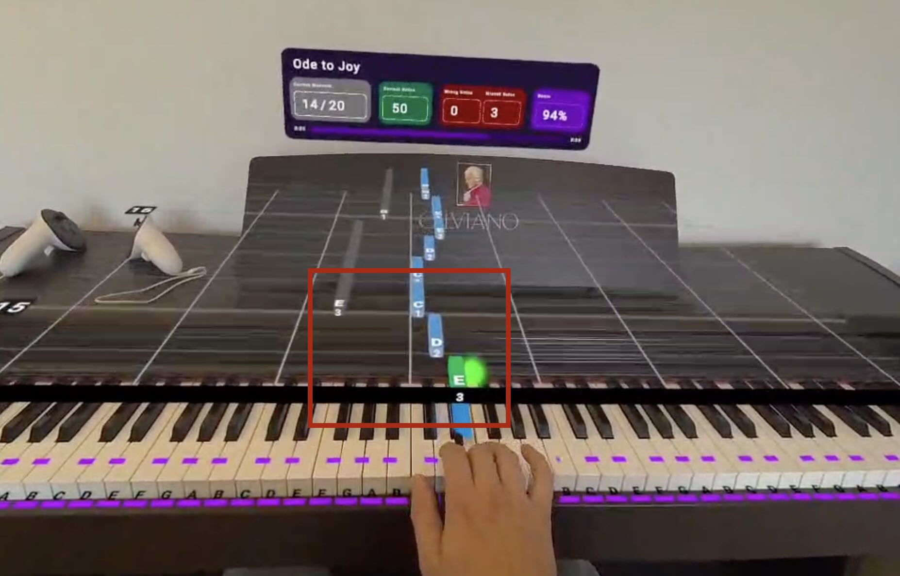

Drag and drop a Piano Vision JSON file into the area below, or click to select a file.
This web-based tool is designed to help pianists, music students, and enthusiasts optimize their piano playing by assigning efficient fingerings to musical pieces. Even if you're not familiar with Piano Vision, this tool can enhance your practice and performance by providing personalized fingering suggestions based on an advanced algorithm.

What Does the Tool Do?
The Piano Fingering Assignment Tool analyzes the notes in a piano piece and assigns optimal fingerings to each note. It considers factors such as hand size, finger strength, and the physical layout of the piano keyboard to recommend fingerings that:
- Minimize Hand Movement: Reducing unnecessary shifts and stretches.
- Enhance Playing Comfort: Adapting to your specific hand size for a natural feel.
- Improve Technical Efficiency: Allowing smoother transitions between notes and chords.
Key Features
- Advanced Fingering Algorithm: Utilizes sophisticated techniques inspired by professional pianists to determine the most efficient fingerings.
- Hand Size Customization: Offers options from extra small (XXS) to extra large (XXL) hand sizes to tailor the fingerings to your individual needs.
- Easy-to-Use Interface: Simple drag-and-drop functionality for uploading your music files and downloading the updated versions with fingerings included.
- No Installation Required: Runs entirely in your web browser, so there's no need for additional software.
How It Works
- Upload Your Music File: Drag and drop your piano piece (in JSON format) into the tool.
- Select Your Hand Size: Choose from XXS to XXL to ensure the fingerings are comfortable for you.
- Process the File: The tool analyzes the piece using the advanced algorithm.
- Download the Updated File: Get your music file back with the recommended fingerings added to each note.
- Practice with Confidence: Use the fingered music to practice more effectively, focusing on technique and expression.
Who Can Benefit?
- Pianists of All Levels: From beginners learning proper technique to advanced players refining their skills.
- Music Educators: Provide students with fingerings that are suited to their hand sizes and technical abilities.
- Self-Learners: Enhance your practice sessions by using professional fingering suggestions.
Why Proper Fingering Matters
Using the correct fingers when playing piano is crucial for several reasons:
- Technical Proficiency: Proper fingering enables smoother transitions and more accurate playing.
- Comfort and Ergonomics: Reduces strain and the risk of injury by promoting natural hand movements.
- Musical Expression: Facilitates better control over dynamics and articulation, allowing for more expressive performances.
About Piano Vision
While this tool is specifically designed to work with JSON files from Piano Vision virtual reality app for Meta Quest that offers an immersive piano learning experience—it is also valuable for those who are not using the app. The tool's fingering suggestions can be applied to any standard sheet music or learning method.
Source-Code on Github | Based on github.com/marcomusy/pianoplayer